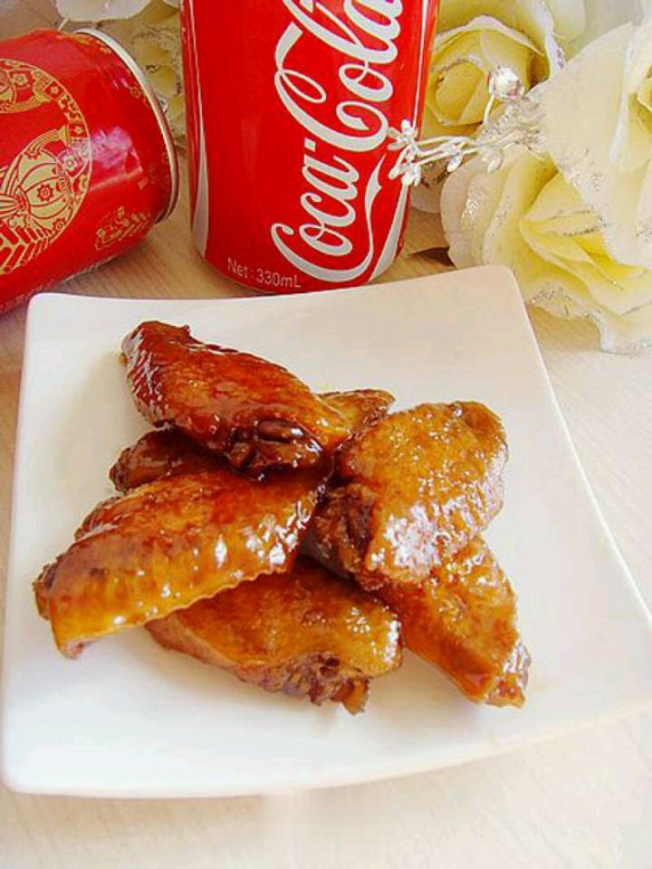
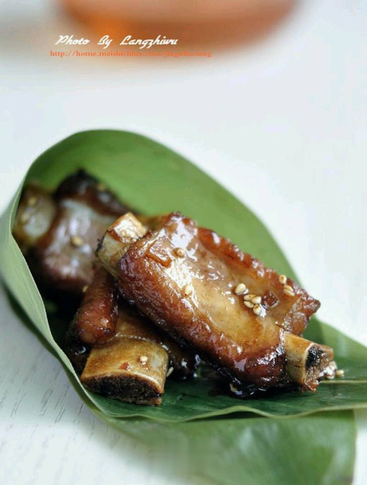

方太的「幸福新厨房」----探寻生活的更多可能
以爱出发
2018年方太推出备受关注的文化产品——“家庭幸福观”：
衣食无忧、身心康宁、相处和睦、传家有道。从此方太以爱出发，
这个春天，方太厨Fun研究所联合方太生活家，与多位居家装修领域的专家达人，
共同打造了方太「幸福新厨房」系列内容与活动。
幸福新厨房，不变的是大家对厨房、食物和生活的热爱。
管家的幸福新厨房
无论对于幸福如何阐释，藏在一饭一蔬中的幸福是永恒的，
我们对幸福厨房的追求也是永恒的。
4月中旬，方太厨Fun研究所联合美食赏味家、「ataraxia 澄間」 工作室主人管家联合打造了一个舒适的幸福新厨房。
为舒适而打造 厨房功能区主要分为三个大块：洗涤区、料理区和烹饪区。 根据厨房面积、布局的不同， 结合使用者的日常烹饪习惯， 设计一个减少走动的厨房动线， 有助于提升烹饪的舒适度。 管家习惯的流程是：储物架拿取食材——操作区处理食材——洗涤区清洗——烹饪区烹调——装盘与清洗。 所以在设计厨房时，选择了“I”字型的布局， 将不同功能区在一条直线上排开，方便自在；并依照 管家的习惯将功能区从左到右依次设置为操作区——洗涤区——烹饪区， 储物架做在墙壁上方，便于随手拿取食材。
“我对于厨房的要求就是设备健全一些，能够帮助我节约一些时间”。
所以管家选择了方太水槽洗碗机和智能蒸箱，水槽洗碗机不仅可以清洗碗筷，
还可以清洗果蔬，特别是西兰花、小龙虾这类的较难手动清洗的食材。
而把食材处理好放入智能蒸箱启动后，就可以去做其他的事情了。
除了动线外，走道和台面也是我们关注的细节。走道尽量兼顾两人错肩走道，
并且橱柜门打开不影响对面的橱柜，所以我们将宽度设置为90cm。
为了避免台面太低或太高，管家使用不便，将烹饪区高度设置为管家身高的一半。
为幸福而打造
对管家而言，厨房占据了他很多的生活时间，他特别喜欢在厨房里做事，享受独有的轻松的氛围。
所以，管家选用了白色的瓷砖，让厨房整体显得干净、整洁；而台面和储物架选用木质材料，
显得自然舒适之余，和白色的瓷砖相得益彰。操作区的左边是一面很大的窗户，
一转头就可以看到院子里的花草和阳光，让心情更加舒适放松。所以在做菜的时候，
管家也希望能享受这样安静舒适的氛围，方太智能升降云魔方，
因采用了直流变频电机，油烟机工作时噪音小，让噪音和油烟都不会打扰主人烹饪时的灵感。
“朋友来了就在厨房里做一餐，大家一起坐下来聊聊，心情就很愉快”。
所以管家在操作台的对面布置了一个日式吧台，他在烹饪的时候，
朋友们就可以坐在吧台前聊聊天，等食物上桌。
对管家而言，他的幸福新厨房就是如此：一个舒适的烹饪空间，
厨电能够帮助他节约操作的时间；一个轻松的社交空间，可以招待朋友们的到来，
一起享受美味的食物，毕竟“人与人之间就是这样，一碗饭一杯水的关系，就会拉近了”。
也是方太生活家的新厨房
方太生活家上海体验馆由2012年完工面世，在桃江路8号相伴上海美食爱好者、
艺术爱好者、生活家们的第七年时光，重新打造了“幸福放映厅”与
“实景厨房”两个功能区域，
邀请建筑设计师、艺术家、美食KOL、生活家家居达人，
各路行业的领军人物相聚方太的幸福新厨房。
「春日」的谷雨节气，向一位懂生活的艺术家李知弥借了谷雨龙井茶，
老师答应好了带“最好的的龙井”，知弥老师亲手递来谷雨茶时，
再三叮嘱，“多泡点，给每个人都喝上”。
「一碗」是管家「ataraxia 澄間」工作室的收藏艺术品，
艺术品回归到生活就是一个吃面的大碗，方太衣食无忧、
身心康宁、相处和睦、传家有道的幸福观回归到生活，
就是一家人共度三餐四季。「好面」是管家与日食记合作的手延面，
配以方太生活家人气美食达人纳米老师精心料理的小菜浇头。谁能不为这碗面倾心。
一碗·好面，换了一段智慧分享

正如管家所说，“人和人之间就是这样，一碗饭一杯水的关系”。
所以幸福新厨房以一碗好面、一杯这个节气特有的谷雨龙井，
拉近方太与嘉宾们的距离，打开大家对幸福理解的话匣子。
方太作为一家厨电企业仅仅有好产品，
还不足以让消费者获得真正的幸福，
企业不仅要提供无与伦比的高品质产品和服务、打造健康环保有品位的生活方式，
更要让亿万家庭享受更加美好的生活。
希望大家都能够以爱为出发点，
做到衣食无忧、身心康宁、相处和睦、传家有道。
在此基础上，方太的各行各业的伙伴们也提出了宝贵的幸福智慧分享：
“孩子是探索厨房的一把钥匙”。
“作为一名设计师，一碗面是一个灵感，一个香味是一个灵感，一阵风是一个灵感。”
——俞挺
《幸福就是，一家人共度三餐四季》已出版
——方太著、李知弥绘x
“我非常爱厨房，生活中如果碰到疑虑的地方我就会走进厨房去思考，
做一顿饭可以找到答案。”
——管家
“退休后投入厨房，爱上厨房，通过厨房认识很多朋友。
幸福与物质无关，经过年龄的增长财富的积累，房子越来越大了，
和父母孩子都有了自己的独立的房间和生活空间，
相处的时间反而变少了，不幸福了。
回想起最幸福的事情是：小时候和父母住在一室户内，
吃过饭，父母看着电视，她在边上做作业。”
——纳米
热门推荐

可乐鸡翅

红烧排骨
 红烧黄骨鱼
红烧黄骨鱼